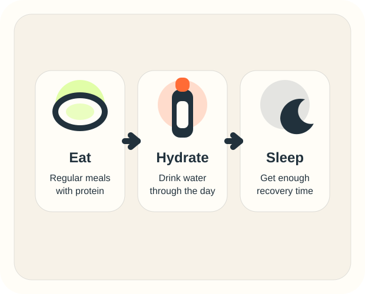

Changing the plan every week
Too much variety can make it harder to track progress and get better at the basics.
Mistakes and Recovery
Training hard matters, but recovery matters too. If your food, sleep, and total training do not match up, progress can slow down fast.
Common Mistakes
Too much variety can make it harder to track progress and get better at the basics.
More sets are not always better. Too much volume can just make you tired.
If you are not eating enough, it is harder to train well and recover.
Soreness can happen, but it does not always mean the workout was better.
Recovery Rules
A beginner plan should feel challenging but still manageable. If every week feels too hard, your plan may be too much right now.

Simple Checklist
Did I finish my planned workouts and keep track of them?
Did I eat enough protein and avoid skipping too many meals?
Did I recover well enough to train again this week?
Practical Tip
If your sleep is bad, work on that first. If you keep missing meals, fix nutrition first. One weak area can hold back the rest.
Check Your Plan